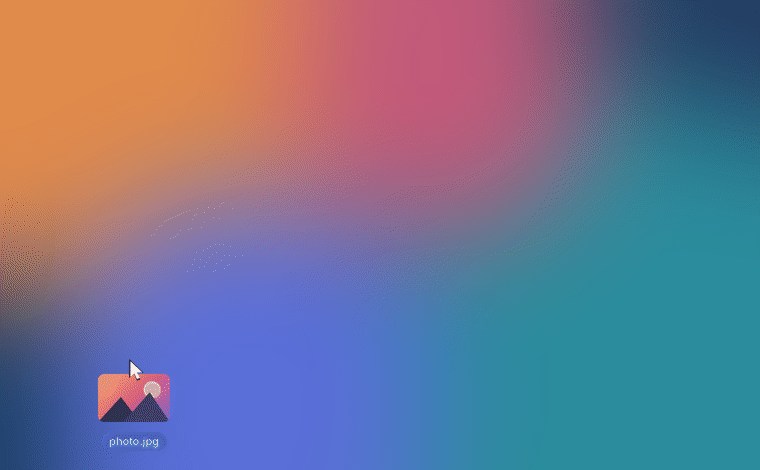
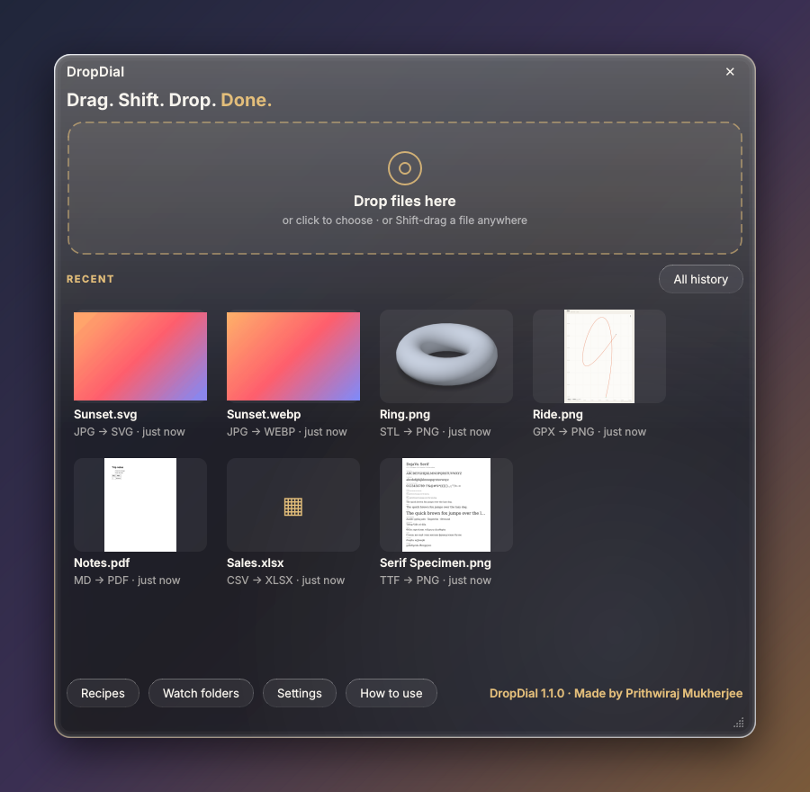
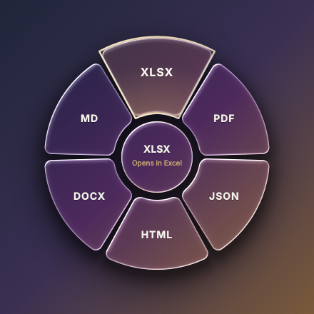

A dial at the cursor
No window to find. The dial appears where you already are, with only the formats that make sense for your files.
A file converter you use by dragging. Drag any file, press Shift, and drop it on a slice of the glass dial that opens at your cursor. 140+ file types, right on your computer.
Windows 10/11 · macOS 11+ · Linux. All downloads

The dial shows only the formats and tools that fit the files you're dragging.
How it works
You don't open DropDial to use it. It waits in the menu bar or system tray and shows up when you need it.
Pick up one file or a whole pile from your desktop, a folder, an e-mail or straight out of your web browser.
The glass dial opens right at your cursor with the formats that fit. Tap Shift again or turn the wheel for more sides.
The result is saved next to the original, never over it. Find it again or undo it from History.
Features
Convert, compress and edit, all from the same gesture.
No window to find. The dial appears where you already are, with only the formats that make sense for your files.
Flip with Shift, Tab or the mouse wheel to reach More formats, Tools and Recipes.
Drag a picture, a file link or a download out of Chrome, Edge, Firefox or Safari. DropDial saves it, then converts it.
Compress, resize, crop, annotate, redact and watermark images; merge, split and protect PDFs; mute and trim video; and more.
Chain steps into one slice, like "Web-ready", "Email size" or "Private", or build your own.
Point DropDial at a folder and every file that lands in it is converted automatically.
Convert a batch at once, zip a pile of files or a folder, and find or undo anything in History.
Right-click menu, Send to on Windows, Home's drop zone (no Shift needed) and a dropdial command.
Liquid-glass dial with your accent colour: Champagne, Rose, Ocean, Emerald, Violet or Silver.
Formats
Images, camera RAW, PDF, Word, Excel, e-books, video, audio, subtitles, archives, fonts, 3D models and map files work without Office or anything else.
| From | To |
|---|---|
| Images: JPG, PNG, WEBP, HEIC, AVIF, TIFF, GIF, BMP, ICO | each other, PDF, SVG (traced), ICNS, TGA, QOI |
| Pro images: camera RAW (CR2, CR3, NEF, ARW, DNG, RAF, ORF, RW2…), PSD, TGA, QOI, JPEG 2000, DDS, ICNS, PPM… | JPG, PNG, TIFF (16-bit for RAW), WEBP, AVIF, HEIC, PDF |
| Vector: SVG | PDF (stays vector), PNG, JPG, WEBP, ICO |
| JPG, PNG, DOCX, TXT; merge, split, rotate, compress, number, watermark, protect, unlock, extract images | |
| Documents: DOCX, TXT, Markdown, HTML, saved web pages (MHTML), reStructuredText | PDF, DOCX, HTML, Markdown, TXT |
| E-mail: EML | PDF, DOCX, HTML, TXT; save attachments |
| Spreadsheets: XLSX, XLSM, XLS, ODS, CSV, TSV | XLSX, ODS, CSV, TSV, JSON, HTML, PDF, DOCX, Markdown; contacts CSV → VCF; combine, split sheets |
| Data: JSON, JSON Lines, YAML, TOML, XML, plist, vCard | each other, CSV, XLSX, PDF |
| E-books: EPUB, MOBI, FB2, CBZ, XPS | PDF, DOCX, TXT |
| Video: MP4, MOV, MKV, WEBM, AVI, WMV, FLV, M4V, MPEG, 3GP | MP4, WEBM, MOV, GIF, MP3; compress, mute, rotate, still frame (iPhone HDR is tone-mapped) |
| Audio: MP3, M4A, AAC, WAV, FLAC, OGG, OPUS, WMA, AIFF | MP3, M4A, WAV, FLAC, OGG; normalise loudness, trim silence, compress |
| Subtitles: SRT, WebVTT, ASS/SSA, SBV, MicroDVD, SAMI, LRC, TTML | each other as UTF-8, TXT; clean captions, fix 25 / 23.976 fps timing |
| Archives: ZIP, 7Z, TAR, TAR.GZ, TAR.BZ2, TAR.XZ, GZ, BZ2, XZ | extract, ZIP, 7Z, TAR.GZ; any files or folder → one ZIP |
| Fonts: TTF, OTF, WOFF, WOFF2, TTC | each other, PNG / PDF specimen; Latin subset, web font kit |
| 3D models: STL, OBJ, PLY, GLB, glTF, OFF, 3MF | each other, PNG preview; center & ground, repair, decimate |
| Map data: GPX, KML, KMZ, GeoJSON, Shapefile | each other, CSV, PNG map; trip stats, reverse, simplify |
Everything works out of the box: the downloads include all the engines, FFmpeg for video and audio among them.
Screenshots


Download
Free for Windows, macOS and Linux. It lives in the menu bar or system tray and tells you when a new version is out.
macOS 11 or later. Apple Silicon is for M1 and newer Macs. Open the .dmg and drag DropDial to Applications.
Windows 10 or 11. Installs for your user, no admin rights. Adds the right-click menu and Send to.
Debian 12+, Ubuntu 23.04+, Mint… Install with:
sudo apt install ./DropDial-linux-amd64.deb
On a Mac, prefer Terminal? This line picks the right build, installs it with no security prompt, and updates it when you run it again.
curl -fsSL https://raw.githubusercontent.com/prithwirajmukherjee15-cmd/DropDial/main/install-mac.sh | bashAll files and release notes are on GitHub Releases. Every download is built from the public source by GitHub Actions.
First launch
DropDial isn't code-signed yet (signing certificates cost money every year), so Windows and macOS warn the first time only. It takes about ten seconds.
"Windows protected your PC"
That's it. Windows won't ask again.
"Apple could not verify 'DropDial' is free of malware…"
Or in Terminal:
xattr -dr com.apple.quarantine /Applications/DropDial.app
On macOS 15 (Sequoia) and later, the old right-click → Open shortcut no longer gets past the warning; use the steps above. Installed with the Terminal line? Then there's no warning at all.
Privacy
DropDial converts everything locally. It collects no usage data and sends no telemetry.
FAQ
Yes. It's open source under the MIT license, with no account, no ads and no paid tier. The full source is on GitHub.
The Windows and macOS downloads aren't code-signed or notarized yet, so the system shows a one-time warning for any app like that. Every download is built from the public source by GitHub Actions; nothing is built by hand. See First launch for the ten-second fix.
No. The downloads include every engine DropDial uses, FFmpeg for video and audio among them, so Word, Excel, e-book, video and 3D files all work on a fresh computer.
On X11, yes. On Wayland, use Home's drop zone (click the tray icon) or right-click a file → Open With → DropDial. Everything else works the same.
Never. Results are saved next to the original with a new name, and History lets you open, show in folder, convert again or undo any of them.
Yes. The dropdial command uses the same engines and recipes as the app:
dropdial convert *.heic --to jpg
dropdial compress photo.jpg --target 500KB
dropdial pdf merge a.pdf b.pdf
dropdial watch ~/Screenshots --recipe web-readyAdd --json for machine-readable output. dropdial formats prints the full list.